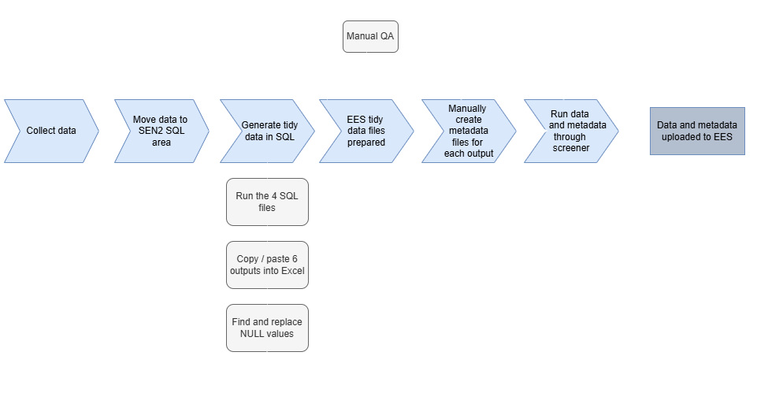
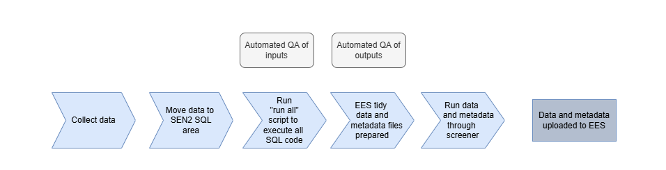
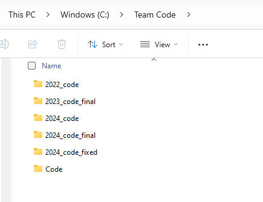
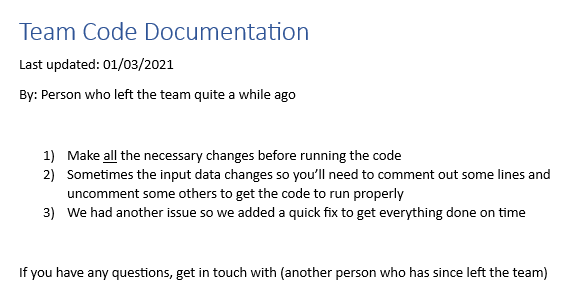
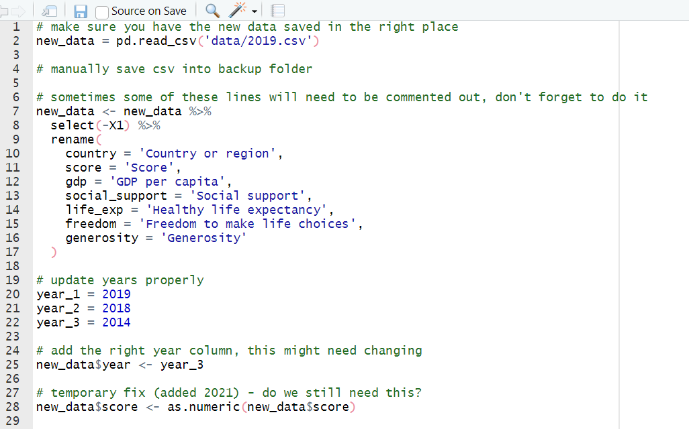
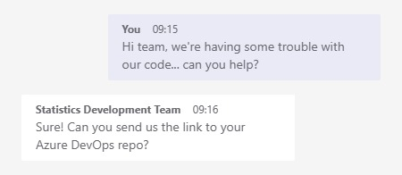

library(DBI)
# Step 1: Define SQL variables
sql_server <- "MY_SQL_SERVER_NAME" # replace with your SQL server name
database <- "MY_DATABASE_NAME" # replace with your database name
# Step 2: Connect to SQL Server
con <- dbConnect(odbc(),
Driver = "ODBC Driver 17 for SQL Server",
Server = sql_server,
Database = database,
Trusted_Connection = "yes"
)
# Step 3: Pull data from SQL Server
my_table <- tbl(con, DBI::Id(schema = "dbo", table = "my_SQL_table")) %>% # replace with your SQL table name
# filter and tidy your data before using collect()
filter(my_column == "my_value", my_column_2 == "my_value_2") %>%
select(my_column_3, my_column_4) %>%
collect()RAP and technical skills for managers
Statistics Development Team
Department for Education
Introduction
Workshop purpose
This session is designed to cover some of the basic principles of RAP from the perspective of a manager, to outline the level of technical skills (R, SQL, Git) that are expected, and to give you a chance to ask any questions that you might have.
Coding and technical skills form a core part of our work as analysts in DfE. To continue producing high quality statistics, teams need to maintain consistent levels of capability at all levels, and so should be looking to build and maintain these skills at every opportunity. If this doesn’t happen, staff turnover or changes in technology may leave you at risk of being left with processes that your team are unable to run or make changes to.
Workshop aims & objectives
In this workshop, our main aims are to:
- Avoid managers feeling “left behind” and lacking the confidence to effectively support their teams
- Reduce the risk of single points of failure in teams where only one person has specific coding knowledge or ability
- Ensure that managers have skill levels at which they can effectively collaborate with and advise their peers and teams
- Be confident that managers know where to go for RAP advice and support if they cannot provide it directly themselves
- Provide information on resources available to allow you to build your skills
There will be a second follow up workshop to build on this content and develop your technical skills further.
Why do I need technical skills?
We understand that many managers won’t be doing as much of the hands-on coding or technical work, but it’s important to have strong enough skill levels in order to successfully support your teams to achieve their potential.
Building your own skills will allow you to demonstrate effective technical leadership, provide advice to team members on how to develop their skills, and to cover during absence or busy periods.
Improving your team’s skills and applying elements of RAP will also build more flexible and resilient teams, reducing stress during periods of staff turnover or absence.
Expectations of analytical managers: technical skills
You should have sufficient confidence and ability relevant to the work of your team to allow you to act as an effective technical leader, to build capability and resilience within your team, and to challenge processes to ensure high quality / value for effort and act as an effective support where needed through advice and peer review. You should be aware of, and engage with, the support offer available to you and your team, including HoP knowledge shares, Statistician’s Guide to the Galaxy sessions, the Analysts’ Guide, the SSU one page support offer guidance, and centrally produced Analysis Function guidance Each standard is described in detail on the Analysts’ Guide - if this guidance is not suitable for your needs, tell us You should know how to advise your teams on each of these standards
Expectations of analytical managers: technical skills
The GSG competency framework contains a Data Analysis strand, applicable to all grades, with the following requirements:
- Innovate and seek out new ways of analysing the data
- Ensure that analysis is reproducible, transparent and robust using coding and code management best practices.
The Analysis Function expectations contain a core skill for:
- Software programming, tools, and techniques — the ability to use coding and programming skills for data analysis
Expectations of analytical managers: reproducible analytical pipelines
On our RAP expectations page, we have pulled out the expectations for analyst managers from the cross-government RAP strategy, which include:
- build extra time into projects to adopt new skills and practices where appropriate
- learn the skills they need to manage software
- evaluate RAP projects within organisations to understand and demonstrate the benefits of RAP
- mandate their teams use RAP principles whenever possible
RAP self-assessment tool
The RAP self-assessment tool allows statistics producers to assess themselves against the department’s RAP standards.
Importantly for managers, you can monitor your team’s progress towards achieving the RAP baseline by viewing ‘RAP progress by area’ and ‘overview of latest responses’.
You should have entries for every publication you manage, and these should be updated either;
- When you make updates to your processes that change your responses or,
- once a year minimum even if you’ve made no changes.
This is so we always have an accurate picture of RAP in the department to share with analytical leaders.
Initial knowledge check
Menti:
Use our live Q&A as we go through
Slido:
Reproducible Analytical Pipelines (RAPs)
RAP: Introduction
What is a reproducible analytical pipeline (RAP)?
Reproducible Analytical Pipelines are simply about having well-documented, reusable processes when analysing data, and ensuring we are transparent when we do!
We already have analytical pipelines and have done for many years. The aim of RAP is to:
- Automate all of the parts that we can, e.g. rather than entering a hardcoded date repeatedly throughout your code, instead use one date variable that can be changed in one place and reused throughout
- Increase efficiency and accuracy by reducing the risk of human error, and making sure that calculations are done the same way each time wherever possible
- Create a clear audit trail using code and documentation to allow analysis to be easily reused where needed, either for repeated publications, or for PQ and FOI requests
RAP principles
You should be familiar with our RAP standards as a framework for analytical work, and we expect managers to ensure that their teams are following these standards
RAP improves efficiency: before RAP

RAP improves efficiency: after RAP

RAP case studies
Implementing RAP best practices can free up time for us to focus on the parts of our work where human input adds true value.
“The previous process with the two Excel workbooks would take a couple of months to run, whereas now it can be run in a matter of hours.”
- Matt Jago, Ops & infrastructure
“[The improvements have] reduced the human errors and also mean analysts and LA colleagues’ time can be spent on more valuable tasks.”
- Family hubs research and analysis team
“The script itself is not complicated, but it removes the risk of human error and reduces the production time to minutes. The time saved can then be dedicated to further quality assurance.”
- RAAC response analyst
How RAP could help you as a manager
A nightmare scenario…
- You get a call from your team member, they’re too ill to come to work this week. Your other “coder” left the team a month ago and you haven’t been able to replace them or train anyone else up yet, so no one else is around
- Your team member was the only one who knew how to run the code for your publication
- You’re already behind schedule
No problem! You can just run the code yourself, right?
Ok, first I need to find the code…
This should be easy, it’s in our shared folder because we haven’t had a chance to move it to Azure DevOps yet…

…
Ok, I think I’ve found the right code…
It’s been a little while since I’ve run this code, I ought to check the documentation to make sure I do it right

I’m sure there’ll be comments in the code that tell me what to do…

Now there’s a weird error
Time to ask for help!

How could RAP have avoided these issues?
- This scenario is exaggerated, but it’s not far from the truth of what we see in many teams
- It’s not just about the time it takes to find code in multiple folders and unpick and run undocumented processes and the stress it might cause, but the risk of errors and the lack of transparency
Finding the correct version of the code
- Sensible folder and file structure (Good practice)
- Version controlled final code scripts (Great practice)
- Collaboratively develop code using Git (Best practice)
Using Azure DevOps to store and version control your code scripts allows you to:
- Immediately see the current version of any code your team has been using
- View all historical versions of the code, along with when the changes were made, what they were, and who made them
- Roll back to previous versions of the code if you encounter an issue with the current version
- Run each others’ versions of local code to collaborate and debug issues
- Quickly work with the Statistics Development Team to resolve issues if they occur
Understanding the code and how to run it
- Documentation (Good practice)
In your Azure DevOps repo, you should have a README file that explains how to run the code, what it does, and any other important information about the code. This means that anyone in your team (including you!) can pick up the code and run it without needing to ask for help.
Your code should also be well-commented, so that anyone reading it can understand what each part of the code does. If sections of code need updating each time, these should be clearly indicated in the code comments.
Running the code without errors
- All source data stored in a database (Good practice)
- Recyclable code for future use (Great practice)
If your code is set up to read data from a database, you can be sure that the data you’re using is up-to-date and accurate. This also means that you can easily update the data you’re using without needing to change the code.
Recyclable code is code that can be used in multiple projects. This means that you can write code once and use it in multiple projects, saving time and reducing the risk of errors. This is particularly useful for code that is used in multiple publications, or for code that is used in multiple parts of the same publication.
Structuring a RAP project
RAP minimum viable product
The Analytical Function guidance states that at a minimum a Reproducible Analytical Pipeline must:
- Minimise manual steps. Manual steps include copy and paste, point and click or drag and drop operations. Where it is absolutely necessary to include a manual step in the process this must be fully documented as described below.
- Deepen technical and quality assurance processes with peer review to ensure that the process is reproducible and that the below requirements have been met
- Guarantee an audit trail using version control software, preferably Git
- Be open to anyone. This can be done most easily by using file and code sharing platforms
- Follow existing good practice for quality assurance – guidance set by departments or organisations, and by the Analysis Function teams and Data Quality Hub for the Analysis Function and Government Statistical Service
- Contain well-commented code and have documentation embedded and version controlled within the product, rather than saved elsewhere
DfE RAP best practice standards
In the DfE we have our own good, great and best practice standards for RAP. Our minimum requirement is that everyone publishing statistics meets the baseline expectation.
Sensible folder and file structure
Use appropriate tools
Processing is done with code
Basic automated QA
All source data stored in a database
Files meet data standards
Documentation
Version controlled final code scripts
Recyclable code for future use
Dataset production scripts
Publication specific automated QA
Automated summaries
Peer review of code within team
Collaboratively develop code using git
‘Clean’ final code
Whole publication production scripts
Use open source repositories
Publication specific automated summaries
Peer review of code from outside the team
Good practice
Great practice
Best practice
Baseline expectation
Ambition
In practice
In practice, this roughly means:
- You are using code to perform all calculations and data manipulation removing all manual steps - this can be a combination of SQL and R code, but one
run_all.Rscript should source all code from both languages. Code should be efficient, well documented (good comments!) and easy to understand.
- The code should not require lots of edits or changes on a typical run. Any variables that are expected to change (like year) should be defined in one obvious place (i.e. a
variable_change.Rscript) and only require updating in that one place.
- The code should be stored in a Git repository on Azure DevOps, with a sensible file structure and a completed readme document. You should be using branches and pull requests to make changes and reviewing each others code before merging.
- Automated QA and summaries should be generated on each run (ideally in a quarto or markdown report that is easily readable and helps to visualise the data). This could include pass/fail tests and graphs of trends to help spot outliers.
- The final outputs for EES should pass all checks in the data screener. If they fail, amendments should be made to the code rather than the files directly, that make the required changes.
Structuring the RAP process
Typically, processes can be broken down into the following structure:
- Ingest raw/input data
- Clean and transform data
- Validate/QA the data
- Produce your output tables
- Produce output charts/dashboards/other products
- Write a commentary/report
Prioritisation in implementing RAP principles
Chapter 3 in the DfT Strategic Reproducible Analysis in Coding book provides some great prioritisation guidance:
While it’s tempting to work through these steps in chronological order, with well-structured code it’s not necessary to do this, and you can start coding on the section which is the highest priority. Prioritisation of these ‘chunks’ can be done taking into account:
- Which of the sections offer the biggest benefits?
- Which sections represent the biggest potential for time-saving (creating a snowball effect in terms of more development time)?
- Can some sections fulfill a dual development purpose (i.e. automate table creation while also making it accessible)?
- What other processes are dependent on this chunk (i.e. if you don’t have a clear idea of clean data structure prior to table creation, it would make sense to do these chunks in order)?
- Is the existing method causing problems, or is it relatively robust?
Example from Department for Transport (DfT)
Discussion
Imagine you are working on a project to produce a report on the number of pupils in each school in England. Within the report you also discuss differences between school types, geographic regions etc.
Currently your team ingest the raw data from a SQL database owned by another team in the department. You run SQL code that aggregates to school level, then you copy and paste the aggregated data from the SQL table into Excel so you can get to work.
The data is then cleaned and transformed in Excel. The aggregated data is copied into a new sheet to clean it, filters are applied to remove schools outside of England, and some duplicates are removed/combined where certain schools have had name changes etc.
The data is then validated by checking the number of schools in your clean data against the number of schools in the raw data, and also by comparing it to last years figures and judging whether the changes look sensible. This is all done in some additional QA Excel sheets in the same workbook.
The output figures are then produced in Excel in some extra sheets. You copy and paste values from the validated data into new tables, using no formulas so they can’t break. you also add some pivot tables to find totals for different school types and geographies etc.
The pivot tables are copied into new sheets and used to produce relevant charts in Excel.
A commentary is written in Word, with some of the charts and tables copied in from Excel.
Once you have the report written up in word, you copy it across to EES.
What would change? What would you change first?
What could I automate?
Data ingestion from SQL database
SQL queries: Use R to run SQL queries and ingest data directly into R. This can be done using the DBI R package.
Example:
Data ingestion using an API
API calls: Use R to make API calls and ingest data directly into R. This can be done using the httr package. Some APIs, like the EES API and Nomis, have their own R packages (eesyapi and nomisR) designed to pull data into R from their APIs.
EES Example:
library(eesyapi)
# Query the publication list
eesyapi::get_publications()
# For example from the test list, we can pick out “Attendance API data”,
# which has an ID of 25d0e40b-643a-4f73-3ae5-08dcf1c4d57f.
# Find all the data sets within that publication
eesyapi::get_data_catalogue("25d0e40b-643a-4f73-3ae5-08dcf1c4d57f")
# For example, we can query the dataset with
# ID 57b69201-033a-2c77-a19f-abcce2b11341
eesyapi::query_dataset(
dataset_id = "57b69201-033a-2c77-a19f-abcce2b11341",
indicators = "tj0Em",
filter_items = list(
attendance_status = c("qGJjG"),
attendance_type = c("TuxPJ", "cZO31", "jgoAM"),
day_number = "AOhGK",
attendance_reason = "9Ru4v"
),
geographies = c("NAT|id|mRj9K", "LA|ID|arLPb"),
time_periods = c("2024|W24")
)
#> code period geographic_level la_name la_code la_oldCode nat_name
#> 1 W24 2024 LA York E06000014 816 England
#> 2 W24 2024 LA York E06000014 816 England
#> 3 W24 2024 LA York E06000014 816 England
#> 4 W24 2024 LA York E06000014 816 England
#> 5 W24 2024 LA York E06000014 816 England
#> 6 W24 2024 LA York E06000014 816 England
#> 7 W24 2024 NAT <NA> <NA> <NA> England
#> 8 W24 2024 NAT <NA> <NA> <NA> England
#> 9 W24 2024 NAT <NA> <NA> <NA> England
#> 10 W24 2024 NAT <NA> <NA> <NA> England
#> 11 W24 2024 NAT <NA> <NA> <NA> England
#> 12 W24 2024 NAT <NA> <NA> <NA> England
#> 13 W24 2024 NAT <NA> <NA> <NA> England
#> 14 W24 2024 NAT <NA> <NA> <NA> EnglandNomis Example:
library(nomisr)
# Use nomis_search to search keywords in table names
nomis_search(keyword = 'Population')
# Use the table ID "NM_2006_1" and the nomis_get_date()
# function to get the data and filter
nomis_data_county <- nomis_get_data(
id = "NM_2006_1", # the ID for the dataset
time = "latest",
gender = 0, # 0 is Total, 1 is male, 2 is female
c_age = c(101, 102, 103, 104, 105), # ages 0, 1, 2, 3, 4
projected_year = this_year-1,
geography = "TYPE433", # this is 'local authorities: county / unitary'
measures = 20100, # value rather than percent which would be 20301
select = c("projected_year", "geography_code", "geography_name",
"gender_name", "c_age_sortorder", "obs_value")
) %>%
clean_names() %>%
distinct() %>%
rename(age = c_age_sortorder)Data ingestion from downloaded files
File downloads: Use R to download files from the internet and ingest data directly into R. This can be done using the download.file function.
Example:
# Get ONS population data from here: https://www.ons.gov.uk/peoplepopulationandcommunity/populationandmigration/populationestimates/datasets/estimatesofthepopulationforenglandandwales
# Insert the URL to the latest dataset below by right clicking the xlxs button
# and selecting 'copy link'.
# REPLACE THIS EACH YEAR
pop_est_url <- "https://www.ons.gov.uk/file?uri=/peoplepopulationandcommunity/populationandmigration/populationestimates/datasets/estimatesofthepopulationforenglandandwales/mid2011tomid2022detailedtimeseries/myebtablesenglandwales20112022v2.xlsx"
# ONS population estimates data 2011 - 2022 ------------------------------
# Download the file to the repo - URL defined in variable_change.R
download.file(pop_est_url, "ONS_input_data/ons_population_estimates.xlsx", mode = "wb")
population_est_2011_2022 <- read_excel("ONS_input_data/ons_population_estimates.xlsx",
sheet = "MYEB1 (2021 Geography)", skip = 1) %>%
# Only keep English LAs (remove Wales)
filter(country == 'E') %>%
pivot_longer(cols = starts_with('population_'),
names_to = 'year',
names_prefix = 'population_',
values_to = 'estimate')Data cleaning and transformation
Data cleaning & transformation: Use R to clean and transform data. This can be done using the dplyr package.
Example:
Updating variables
Variable changes: Use R to define variables that are expected to change. This can be done using a variable_change.R script. You define these variables once here, and use the variable names in your code rather than their values.
Example:
# Define variables that are expected to change
this_year <- 2024
last_year <- this_year - 1
comparison_year <- this_year - 10
geog_level <- "national"
# Use the defined variables in code
output_table <- data %>%
filter(year %in% c(this_year, last_year, comparison_year),
geography == geog_level) %>%
group_by(year) %>%
summarise(mean_value = mean(value))Producing output data files
Tables: Use R to produce output files. This can be done using the write_csv function from the readr package.
Example:
Producing output charts and commentary
Charts: Use R to produce output charts. This can be done using the
ggplot2package.Commentary: Use R to produce a commentary/report. This can be done using
rmarkdownorquarto. We have an example QA report that includes template code snippets for our minimum expectations in the Automated data QA repo, which produces the following html output examples:

RAP: Conclusions
RAP myth-busting
- Myth: If we move to a RAP process, we’ll be relying on computers rather than humans with experience
- Reality: RAP is about using computers to do the things they’re good at (speeding up repetitive processes), so humans can do the things they’re good at (critical thinking and quality assurance based on knowledge and context). It’s about making the best use of both.
- Myth: Once our project has achieved the RAP standards, it’ll be perfect
- Reality: RAP is a set of best practice standards, but there are always ways to improve code efficiency. You should be looking to make continuous improvements to your processes where necessary.
RAP myth-busting
Myth: If we move to RAP best practice, we’ll have to rewrite all our SQL code into R
Reality: RAP is about using the best tool for the job. If you’re using SQL and it’s working for you, that’s great, and there’s no pressure to rewrite code if it’s not necessary. We especially recommend using SQL for any heavy processing work with large datasets.
Myth: RAP is complicated and hugely time consuming
Reality: Gradual, small changes towards best practice all add up - you don’t have to change everything all at once! You have probably already made much more progress towards best practice than you realise
Myth: RAP is a barrier to innovation and creativity
Reality: RAP is just a framework that gives us a consistent way of doing analysis across government. It’s about making sure that your code is transparent, repeatable and efficient. It’s about making sure that tedious and time consuming parts of processes are automated, so that you can spend more time on the creative and innovative parts of your work.
Knowledge check
R & RStudio
R: Introduction
What is R?
How do I use RStudio?
R basics (won’t do all of these…)
Creating a project
Creating an initial script
Using packages
Reading in data
Cleaning data
Aggregating data
Mutating data
Joining datasets
Writing functions
R: Summary
Using R for RAP
Benefits over Excel
Git, GitHub and Azure DevOps
Git: Introduction
 ::: :::::
::: :::::
What is Git?
Git is a piece of software designed for version control, i.e.
- Tracking changes
- Undoing changes
- Maintaining parallel variants of code during development periods
Git works with repositories:
- A repository (or repo) is just a folder that contains all of the version controlled files of a project.
- It can have multiple sub-folders that will also be tracked.
Git records all the version control information within a hidden folder called .git
What are GitHub & Azure DevOps?
There are multiple different ways that you can work with the Git software and interact with your repositories. In DfE, the main two are GitHub and Azure DevOps. Git is the underlying software, and GitHub and Azure DevOps are websites that work alongside it. They allow you to:
- Store a central shared back-up of your repository and view the files in it;
- View a complete history of any changes made to files in the repo and see who made them and when;
- Create and view different branches (variants) of the code;
- Use project management tools such as Issues logs (on GitHub) or Kanban boards/task boards (on Azure DevOps);
- Complete QA by creating pull requests (requests to review changes before merging them), reviewing code, and getting feedback from collaborators;
- Perform automated QA and deployment of code (e.g. sending a dashboard live).
What are GitHub & Azure DevOps?
GitHub and Azure DevOps are generally not a place to:
- Run your code;
- Edit your code (although there is some basic text editing functionality you can use).
What’s the difference between Git, GitHub and Azure DevOps?
- Git is the underlying software that you, GitHub and Azure DevOps use, providing the commands to record changes, create branches, merge branches, undo changes, etc.
- GitHub provides a public space to store a shared copy of your repository, with features to plan, manage and share your work publicly.
- Azure DevOps provides a secure space to store a shared copy of your repository, with features to plan, manage and share your work internally within the DfE.
Benefits of Git
- Collaboration: Get support from team and wider community by easily sharing code (our team find it much easier to support you if we can just go and clone your repo…)
- Code QA via reviews and automated checks
- Continuity
- Can undo changes
- Can try different methodologies in a properly controlled way
Benefits of Git
Version control: Shared folders lack good/detailed version control which leads to;
- Messy folders with multiple versions of files (file_v1, file_v2, file_final, File_final_FINAL etc.)
- Potential to overwrite/lose work
- No ability to view a file’s history and see who made previous changes and why.
Git and platforms like GitHub and Azure DevOps provide robust tracking of all changes, who made them, and their commit message, ensuring continuity and auditability.
- Collaboration in shared folders can be tricky and require duplication of files. Branching with Git is a safe and sensible way to work collaboratively with parallel versions of files that can eventually be merged into a final version.
- Documentation: ‘Run-notes’ or README files in shared folders can be easily lost, outdated, or even not exist at all! Git projects often automatically generate README.md files for you to complete, and they render in Azure DevOps/GitHub automatically, providing instantly-seen documentation for anyone who opens the repo. Using a markdown (.md) file instead of .txt or Word also gives additional abilities like linking to other pages or files and easily including code snippets.
Git basics
Getting set up
GitHub: Just create your own GitHub account, no IT support needed! You should use your work email address (or link it to an existing account if you have one) for GitHub accounts you will use at work.
Azure DevOps: Fill in the DevOps IT service request form. See the help page on how to fill in the DevOps IT request if you need support filling it in!
Interacting with Git
You can use Git from with R-Studio, Visual Studio and GitHub Desktop using nice graphical user interfaces. At their heart though, all of these run the Git command line functions. The key ones that you’ll call on a lot (however you choose to interact with Git) are:
git clone repository-urlgit add .git commit -m "This is a message describing my latest changes"
git pushgit pullgit checkout -b branch-namegit merge branch-name
These 7 commands are the main things you need to start tracking your projects using Git.
Git commands: clone
When you want to start working on a project that is already on GitHub or Azure DevOps, you need to clone the repository. This means creating a copy of the repository on your local machine. That means that you can work on the files on your device, and you choose when to update the online version with your changes (it does NOT update online automatically).
Git commands: pull, commit, push
Pull, commit, push are the three main commands you will use in Git.
Pull:Get the latest changes from the shared repositoryCommit:Record your changes in the repositoryPush:Send your changes to the shared repository
A typical workflow would therefore be:
- Open the project on your device and ensure you’re in the correct branch,
Pullto ensure that any changes made to the online version by others are pulled down onto the version you are working on,- Make your own changes and save them.
- Commit your saved changes, and include a useful commit message to explain what you have done.
Pushyour changes to the shared repository when you’re ready for others to see them.
Git commands: branches
Branches in Git are like parallel universes of code.
Your main branch should be your most up-to-date, working version of your code. If you want to make updates or develop new features, you should create a new branch. This essentially creates a copy of the main branch in a different place.
Working on your new branch means that you can try new things and edit your code without affecting the main branch - allowing others to continue using the main, working branch if needed! It also means two people could both create their own branches and do development work simultaneously without affecting each others work!
Git commands: pull requests
Imagine you have finished all of the development work in your branch, and you are ready for your changes to be moved into the main branch! To merge your changes into the main branch, you create a pull request. This is a request for someone else to review your changes and approve them before they are merged.
Working in repos: good practice
README files: expectations
- You will see a README file on each repository. READMEs should be filled in by your team to help someone familiarise themselves with the code in the repo, any access requirements, places where lines of code might need updating before each run, and contact details if anyone runs into issues.
- The dfeR package contains a README template, and we have information on how to populate it on the Analysts Guide
- During RAP audits, we check the contents of the repo’s README to ensure that it is detailed enough
- If you’re using a public GitHub repo, the contents of the README will also be public, so carefully consider what information you include there
README file template
Your README should contain the following information (but you can always add more!):
- Introduction: explain the purpose of the code
- Requirements: which databases do you need access to so that you can run the code? How do you get that access? Is version control being managed using renv? What skills do you need to run the code?
- Getting started: describe the expected input data and where it can be found, as well as what output you expect from the code
- How to run and update: do any lines of code need updating before the code is run? If so, list them here. Outline the process for contributing to the repo, updating the code, or raising issues
- Contact details: list the names and contact information of the people who maintain the repo, as well as any support channels
Recommended work flow
Pull requests
What is a pull request?
- As a manager, your main interaction with GitHub or Azure DevOps is likely to be through pull requests (PRs). They offer a way to do transparent code QA without having to send long and complicated emails with line numbers that currently contain problems! Any comments added to a pull request are saved in the history of a repo, so you can always go back and confirm whether you asked for certain changes, and check when and how the changes were made
- When someone in your team is ready for their code to be checked, they should raise a pull request and add you as a reviewer. You will receive an email notification to let you know that your review has been requested
What should I include in a pull request?
- It is up to the person requesting review to include sufficient detail in their PR.
- The ideal scenario is that you should be able to pick up a PR and know exactly what you need to check without asking the person who wrote the code for any more information!
- You might wish to set a PR template on your repo to encourage people to add all the information that any potential reviewers might need:

How to use pull requests
- When viewing a pull request, you’ll be able to see where new lines or characters have been added to the pre-existing code (shown in green), or whether lines or characters have been deleted (shown in red). You’ll only be shown files that have been changed as part of that PR, so don’t worry if some files aren’t visible.

Adding comments to code scripts
- On Azure DevOps, if you hover over a line of code, you’ll see the comment icon appear next to the line number. Click on it to add a review comment to that specific line of code

- On GitHub, the process is the same, but the comment icon looks like a blue + symbol instead:

Adding general comments
You can also add overall comments on a pull request, rather than leaving comments on specific lines of code.
- On Azure DevOps, the comment box is at the bottom of the pull request page and looks like this:

- On GitHub, the comment box is underneath the PR description box and looks like this:

Requesting changes or approving
When you’ve finished your review, you have two options:
- Approve the PR - this means that you’re happy with everything and you agree for the current branch to be merged into the main branch. This will overwrite the files in the main branch that have been changed as part of this PR
- Comment on the PR - this means that you’ve requested changes to the code, and it’ll be sent back to the person who raised the PR so that they can make the requested fixes
Reviewing code
Why code reviews are important
- Ensure Quality: Catch issues early, reduce bugs.
- Share Knowledge: Improve team skills and understanding.
- Encourage Collaboration: Foster teamwork and better practices.
How to structure your code review
- Understand the Context:
- Read the PR description and associated documentation.
- Run the code locally if necessary (check that it works!)
- Be Constructive:
- Suggest alternatives instead of just pointing out problems.
- Add comments or questions to specific lines.
- Praise and Critique:
- Highlight good practices.
- Explain why changes are needed.
- Ask questions where you require clarity - chances are if you don’t understand something, then others looking at it won’t either! This is a sign that documentation or comments need improving!
Things to look for
- Correctness: Does the code do what it’s supposed to do? Are there any bugs or errors (e.g. an incorrect or missing filter)?
- Readability: Is the code easy to understand? Is the logic clear? Do you understand the intention of the code?
- Maintainability: Is the code easy to update in the future? Are there hard-coded values that will need changing in future spread throughout (bad practice), or are all variables that will change stored in one obvious place?
- Performance: Is the code efficient? Are there any unnecessary steps or loops? Can you see repetitive code that could be made into a function?
- Documentation: Are there comments and documentation where needed? Are they clear and helpful? If you don’t understand a decision or piece of code, ask for clarification! The likelyhood is that others will also be confused by it and it needs additional comments or documentation.
Example: requesting improved clarity & comments
#| context: setup
# Create a dummy dataset
student_data <- data.frame(
student_id = 1:10,
age = c(16, 17, 19, 18, 15, 20, 17, 16, 21, 18),
subject = c("Math", "Science", "Math", "English", "Math", "Science", "Math", "English", "Math", "Science"),
score = c(85, 90, 78, 88, 91, 84, 79, 92, 95, 89),
attendance = c(95, 85, 60, 98, 70, 50, 85, 99, 90, 80),
year = c(2023, 2023, 2023, 2023, 2023, 2023, 2023, 2023, 2023, 2023)
)Pull Request Code:
Review Comment:
I’m unclear on why the threshold is hardcoded to 80 here. Can you explain why 80 was chosen, and whether this is a departmental or industry standard? This might need to be more flexible for future updates. It would be useful to add a comment explaining the significance of the 80 threshold here and whether it will change in future. This will help future maintainers understand the code.
Suggested Revision:
# Define attendance threshold
# 80 is the department's standard threshold for 'passing' attendance. This can be changed in future in line with policy changes.
attendance_threshold <- 80
# Adding a flag for students who passed the threshold
processed_data <- student_data %>%
mutate(passed_threshold = if_else(attendance >= attendance_threshold, TRUE, FALSE)) %>%
filter(passed_threshold == TRUE) # Only include students who passed the attendance thresholdExample: identifying errors
Pull Request Code:
Review Comment:
The comment on line 3 states that students over 18 should be filtered out, but the code
filter(age > 18)keeps students over 18 instead of removing them. This error will be carried through the pipeline, making the outputs inaccurate. I think the filter condition should befilter(age <= 18).
Example: suggesting improvements
Pull Request Code:
# Original Code in the PR
# Calculate weighted average score by subject
math_scores <- student_data %>%
filter(subject == "Math") %>%
summarise(weighted_score = sum(score * weight, na.rm = TRUE) / sum(weight, na.rm = TRUE))
science_scores <- student_data %>%
filter(subject == "Science") %>%
summarise(weighted_score = sum(score * weight, na.rm = TRUE) / sum(weight, na.rm = TRUE))
english_scores <- student_data %>%
filter(subject == "English") %>%
summarise(weighted_score = sum(score * weight, na.rm = TRUE) / sum(weight, na.rm = TRUE))Review Comment:
This code is repetitive and if we add more subjects, we’ll need to duplicate the same logic for each one. This makes the code harder to maintain and more error-prone. Could you write a function to calculate the weighted average score to reduce the risk of errors and make the code easier to maintain?
Suggested Revision:
# Define a function to calculate the weighted average score
calculate_weighted_score <- function(data, subject_name) {
data %>%
filter(subject == subject_name) %>%
summarise(weighted_score = sum(score * weight, na.rm = TRUE) / sum(weight, na.rm = TRUE))
}
# Calculate weighted average score by subject
math_scores <- calculate_weighted_score(student_data, "Math")
science_scores <- calculate_weighted_score(student_data, "Science")
english_scores <- calculate_weighted_score(student_data, "English")Example
Pull Request Code:
# Original Code in the PR
# Calculate average score by subject for 2023
average_scores <- student_data %>%
filter(year == 2023) %>%
group_by(subject) %>%
summarise(mean_score = mean(score, na.rm = TRUE), .groups = "drop")
# Create a summary message for 2023
summary_message <- paste0("The average scores by subject for the year 2023 are as follows:")
# Save the 2023 results to a CSV
write.csv(average_scores, "average_scores_2023.csv", row.names = FALSE)
# Add a flag for scores above 90 in 2023
high_scores <- student_data %>%
filter(year == 2023) %>%
mutate(high_score_flag = score > 90)
# Save the high scores dataset for 2023
write.csv(high_scores, "high_scores_2023.csv", row.names = FALSE)Review Comment:
The year
2023is hardcoded in several places: filters, messages, and filenames. If we need to update this code for a different year, we’d have to make changes in every instance, which is error-prone. Consider defining the year as a variable at the top of the script or in avariable_changescript. This will allow you to update the year in one place, making the code easier to maintain and reuse.
Suggested Revision:
# Define the analysis year
analysis_year <- 2023 # Update this each year
# Calculate average score by subject for the analysis year
average_scores <- student_data %>%
filter(year == analysis_year) %>%
group_by(subject) %>%
summarise(mean_score = mean(score, na.rm = TRUE), .groups = "drop")
# Create a summary message for the analysis year
summary_message <- paste0("The average scores by subject for the year ", analysis_year, " are as follows:")
# Save the results to a CSV
write.csv(average_scores, paste0("average_scores_", analysis_year, ".csv"), row.names = FALSE)
# Add a flag for scores above 90 in the analysis year
high_scores <- student_data %>%
filter(year == analysis_year) %>%
mutate(high_score_flag = score > 90)
# Save the high scores dataset
write.csv(high_scores, paste0("high_scores_", analysis_year, ".csv"), row.names = FALSE)Task: Azure DevOps treasure hunt!
Open the RAP for managers Azure DevOps repo!
Your task is to explore the repo in order to find the 2 mistakes and 6 hidden letters which spell the mystery-word!
Here are some hints to get your started:
- The README file should be the first thing you look at in any repo (and should be of a high quality)
- As a manager, you will often be asked to approve pull requests.

Azure DevOps Boards
What are Azure DevOps boards?
Azure DevOps boards are a project management tool that allows you to plan, track, and discuss work across your teams.
Key points:
- Boards are associated with teams rather than repositories.
- This means multiple repositories can be tracked on one team board.
- They create a central place to monitor progress, assign tasks, and collaborate efficiently.
Features of Azure DevOps Boards
Azure DevOps Boards offers powerful tools for project management:
- Work Items: Track individual tasks, bugs, or features. Each work item has a title, description, and status, and can be assigned to a team member. You can also add tags, attachments, and comments to work items to provide additional context, and even link work items to branches, commits and pull requests.
- Backlogs: Prioritised lists of work items that need to be completed as part of a project. You can add work items to the backlog, assign them to team members, and set priorities. The backlog helps you plan and track the progress of your project, and ensures that work is completed in the correct order.
- Sprints: Use sprint planning for time-boxed projects. You can move work items into sprints, assign them to team members, and track progress. Sprints help you break down work into manageable chunks, and ensure that work is completed on time.
- Kanban Boards: Visualize work in progress with a drag-and-drop interface (similar to trello).
Benefits for RAP
Why use Azure DevOps Boards for Reproducible Analytical Pipelines?
- Visibility: Track all projects in one place.
- Accountability: Assign tasks with clear ownership.
- Collaboration: Comment directly on tasks to resolve issues or clarify requirements.
- Documentation Link to code, data, and other resources to provide context.
- Integration: Link directly to R scripts, SQL code, or other artifacts in your repositories.
- Organisation - Keep all your work in one place, and easily see what needs to be done next.
Task: Explore Azure DevOps Boards
Open the RAP for managers Azure DevOps repo and navigate to the Boards tab (In the sidebar, expand the boards section and select boards within that!).
Click on the + New Item button and give it a title. Hit Enter to save it!
Now expand it by clicking on the title. Fill in the details for the task, including the description and assignee (you can assign it to yourself or the person you’re sat next to!). Explore the different features like tags, attachments, and comments. Close the expanded view and click the three dots on the task to explore eve more features like creating a branch.
Move a task: Update the task’s progress by dragging it to a new column.
Collaborate: Comment on someone else’s task to provide additional context, ideas or instructions.
Goal: By the end of this exercise, you’ll feel confident using Azure DevOps Boards to manage your projects and collaborate effectively.
:::

:::::
Summary
Making time for technical learning & development
It may feel difficult to work on your technical skills when you have fewer opportunities to do hands-on work. Please make sure that you have taken time to watch the HoP Office knowledge share on L&D - it contains great advice about how to work on your skills.
Why not request a DataCamp license and spend an hour a month working on one of the courses? You could even put time in the calendar for your whole team and work through the courses together.
You can request DataCamp licenses by emailing Lisa Smyth
Useful learning resources
Final knowledge check